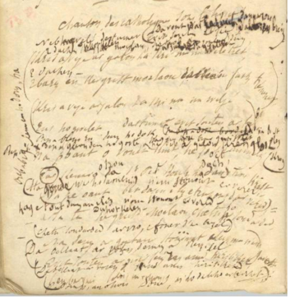
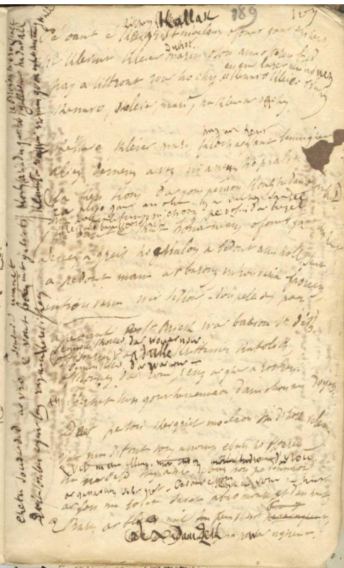
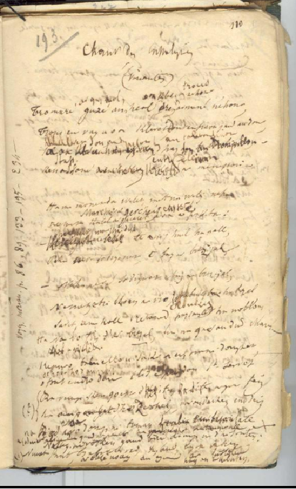
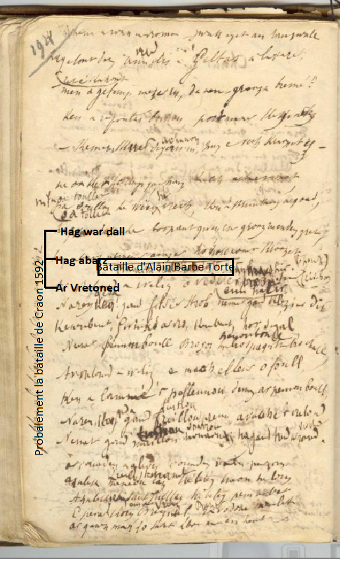
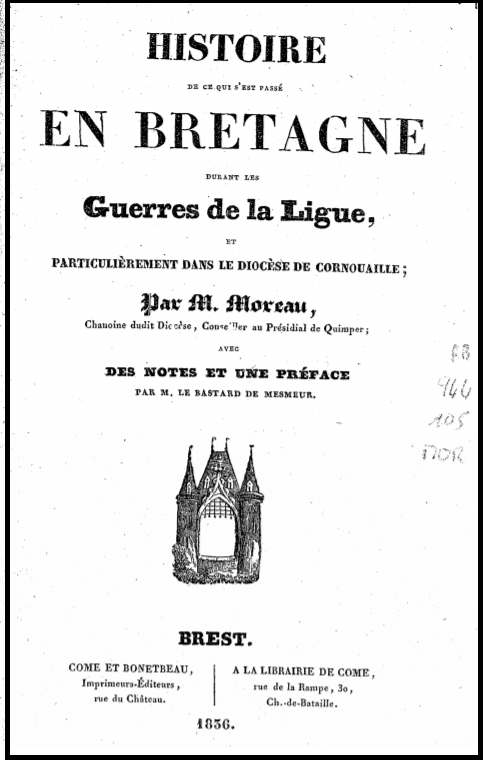
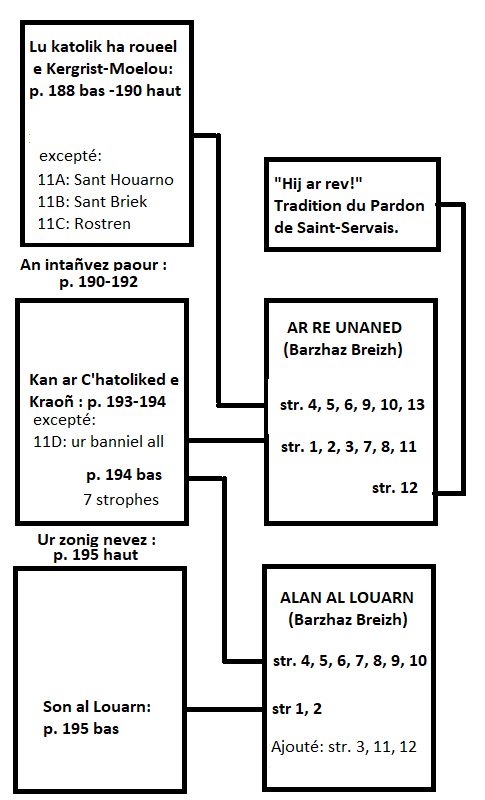

Ar Re Unanet

Ton
|
Dans le texte du Barzhaz ("Les Ligueurs", "Ar Re unaned") et dans le texte manuscrit du carnet N°2, les passages qui semblent avoir été notés à la volée (authentiques) sont en
caractères gras
, ceux qui semblent moins authentiques en caractères
italiques
(manuscrit) ou standards (poème du Barzhaz).
Le poème du Barzhaz comprend des strophes tirées: |
In the Barzhaz poem ("The League", "Ar Re unanimed ") and in the handwritten text in copybook N° 2, the (authentic) passages which seem to have been noted from the singing of an informant are in
bold characters
, whereas those apparently less authentic are in
italic
(in the manuscript) or standard (Barzhaz poem) characters.
The Barzhaz poem includes stanzas: |
|
1.Tro mare ar c'huz-heol, oe klevet trouz neizhour,
Trouz ur vag a oe klevet o tonet gant an dour, Ha strap ha son an drompilh hag an tabolinoù Ken a zone ar c'herreg war lein ar menezioù! 2.Ha me monet da welet ; ha me welis netra Nemet Marc'haid ar gerc'heiz, pav-kamm, o pesketañ "Marc'haid, Marc'haidig, te nij uhel ha pell Petra nevez zo digoue'et e-barzh e Breizh-Izel ? 3.- Netra nevez zo degoue'et e-barzh e Breizh-Izel Nemet e tri c'horn ar vro zo strafuilh ha brezel Savet an holl Vretoned, plouiziz ha noblañs, Ha na vo fin d'ar brezel ma na gav an dud chañs. - 4. Nep o gwele dastumet da vont da harzoù Breizh E tachenn Kergrist-Moelou, d'ar Yaou Fask , tarzh-an-deiz, Peb arkebut war o skoaz, pep bleuñv-roz eus o zog, Pep kleze eus o c'hostez, banniel ar Feiz a-raok 5. Ha pa oant o vonet kuit, i zo aet d'an iliz Evit kimiadañ sant Per koulz hag an Aotrou Krist Hag o tont eus an iliz 'n em stouont er vered : "Arsa 'ta , Kernev-Uhel, setu ho soudarded! 6. Setu soudarded ar vro, soudardet unanet, Evit difenn ar gwir Feiz rak an Hugunoded Evit difenn Breizh-Izel rak Bro-Saoz ha Bro-C'hall, Kement a wast hor bro-ni, gwazh eget an tan-gwall 7. Hag o tont eus ar vered, e-leizh a c'houlenne : "Men a gavimp mezher ruz d'en-em groazañ breme ?" Ken a droc'has kalonek paotr maner Kergourtez : "Kemerit skouer diganin hag e viot kroazet aes!" |
8.Ne oa ket e gomz gantañ, e gomz echuet mat
Oa toullet gwazhenn e vrec'h ken a strinkas ar gwad Ha war dal e borpant wenn, ur groaz ruz a oa graet Hag a-barzh nemeur amzer o holl a oant kroazet! 9. Pa oant e-kichen Kallag o vonet gant an hent E klevjont kleier Duhot o son an ofer'nn-bred Hag i distreiñ war o c'hiz en ur lâret 'n ur vouezh : "Kenavo kleier Mari ! Kenavo kleier kaezh ! 10.Kenavo 'ta, kenavo, kleier kristeniet ! Alies en deizioù-lid ni hon-eus ho prallet ! Ra blijo gant an Aotrou, hag ar Werc'hez santel, Ma ho prallefimp-ni c'hoazh pa vo fin d'ar brezel ! 11.Kenavo, bannieloù sakr, pere hon-eus douget Oc'h ober tro an iliz, e pardon Sant-Servet Ra vimp ker gouest da zifenn hor bro hag ar gwir Feiz Hag ez omp bet d'ho terc'hel war an dachenn, un deiz ! 12.Da hijo Doue ar rev! Da vo gweñvet an ed! Gweñvet e douar ar Gall, trubard d'ar Vretoned! Ra ganomp-ni da viken, en ur vouezh, paotred Breizh: Biken! Biken n'em-baro an annoar hag ar bleiz!" 13.Ar ganaouenn-mañ zo graet abaoe 'm omp aet war an hent E-barzh ar bloaz mil pemp kant daouzek ha pe'ar ugent Graet gant ur c'houer yaouank, war un ton da gano Kanit-hi paotred Kernev, da laouenaat ar vro! |

| MANUSCRIT / MS | KLT | COMMENTAIRES / COMMENTS |
 P. 189 / 107  ********************************* P. 193 / 100  P. 194  |
CHANSON DES CATHOLIQUES SOUS LA LIGUE [En fait chant de Chouans de 1795] [Ajout en 2 colonnes:] [a] Nep a wele dastumet / evit soutenn ar Feiz E tachenn Duhot-Kelen (=Duhault-Quelin), d'ar Yaou / d'an gouloù-deiz, Da vont d'an harzoù, d'al lezoù Breizh. D'ar Zadorn da gouloù -[deiz]) [ Entre accolades:] 4. Kriz vije ar galon ha kriz nep na ouelje ket, E-barzh en (E tachenn) Kergrist-Moeloù, d'ar Yaou-Fask tremenet, [ Entre accolades+ mention "bp":] Kriz a vije ar galon ha kriz ma na ouelje Eus o gwelet dastumet evit soutenn ar Feiz.. [Ajouts après cette strophe en 2 colonnes] [b] Pep a bleuñv-ruz d'eus o zok / hag [a bik-lemm en] o lez krog + Pep a gleon d'eus o c'hostez / hag int holl brav gwisket Ha pep a galon krenn glok. [En marge à gauche verticalement] [c] Pep a bik-lemm en o dorn 5. Na poent o vonet kuit, a zo aet d’an iliz Lar kenavo d'an Aotrou St Per, koulz ha (deoc'h) Aotrou Krist, Ha goude war o daoulin n’em stouont er vered, Na pa oant bet d'an iliz, e teuzont d’ar vered . [Ajout: après cette strophe] [d] Hag o tont d'eus an iliz n’em stouont er vered – 6. - Arsa-ta, Kergrist Moelou (Duhot Kelen) , setu ho soudarded ! Ha da denn ganto stourmad e-lec'h ma n’em gavent, Evit soutenn ar gwir Feiz rak an heretiked Pedomp an Aotrou Doue, m’ho dalc’ho er yec'hed! [Ajouts entre les lignes] [e] (Setu soudarded ar vro, o vonet d ar brezel)... Da bellaat ar vosenn demeus a Vreizh Izel (Da bellaat ar vosenn gant an heretiked) (embarqués selon un ordre?)
9. Pa oant e Kergrist Moelou ( [a] kichen Kallak) ) o vonet gant an hent, E klevint kleier Mari ([b] Duhot) o son an oferenn bred, Hag a distront war o c'hiz : Kenavo kleier ‘r Verc'hez En ur laret 'n ur mouez Kenavo, kleier, Mari, ha kleier ar Verc'hez. 10. Kenavo kleier Mari, kloc'h ar zant hag ar zent benniget Alies devri a vez ni hon-eus ho prallet, (Ha kenkoulz d’ar gousperoù, koulz ha d'an ofer'nn bred) [ Ajouté entre 2 lignes:] [c] Ra blijo gant an Aotrou hag ar Verhez santel Ma ho prallefimp-ni c'hoazh, pa vo fin d’ar brezel . 11 A. Pa oant e Sant Houarno, o fonet gant an hent Demeus a greiz o c'halon a bedont an holl sent, A bedont Mari ar barrez, Itron Varia Faouenn, Itron Varia Wir Sikour, d'hon pellaat d'eus poan. 11 B. Ha pa oant Ofisourien ( (d] Pennoù kornad ) 11 C. - Ofisourien ( Pennoù kornad ) Kasit hor gourc'hemennoù d’an Aotrou an Doyen, Da berson Kergrist-Moelou ha d’an holl veleien, Vit ma defont soñj ac'hanomp, e-barzh o oferenn , 13.. Evit ma helimp, sammet c'hoazh monet en-dro d'ar vro Ha mar defec'h soñj ac'hanomp, e-barzh ho pedennoù. [f] Ar ganaouenn-se zo bet graet – Pe oamp o vonet en hent Ar zon-mañ zo bet savet abaoe mont d'an hent, E- Barzh ar bloaz mil [g] daouzek ha pevar-ugent [En marge à gauche verticalement:] [h] 6. Setu soudarded ar vro (soudarded unanet) o vont lec'h int galvet Evit soutenn ar gwir feiz rak an heretiked Koulz ha re a-du gante, Gallaoued ha tud all, Re Bro-zaoz ha Bro-C'hall, Kement a wask ar vro-mañ, gwashoc'h eget an tan gwall.
13. Hag a zo bet hi savet war un ton da ganañ, Kanit-hi, kozh ha yaouank, da laouenaat ar vro. ********************************* p. 193 / 110 CHANT DES CATHOLIQUES (VARIANTES) [Chant sur la bataille de Craon en 1592] 1. Tro mare 'guzhe an heol dreñv ar menez neizhour ...ar guzh heol, trouz oa klevet neizheur Trouz ur vag a oa klevet ' tont en traoñ gant an dour Klevet son an drompilhoù hag an taboulinoù A oa klevet trouz ur vag ha son an Drompilhoù Ken a zone ar c'herreg e kreiz ar menezioù. 2. Ha me monet da welet, met na weliz netra Nemet Katell-ar-Gerc'heiz a oa e pesketañ Marc'hait ar Gerc'heiz er ster e oa - Kerc'heiz, O kerc'heizig, te nij huel ha pell, Petra neve zo degouet, e-barzh a Vreizh-Izel? 3. - Netra nevez zo degouet e-barzh a Vreizh-Iizel, Nemet, e tri c’horn ar vro, strafuilh bras ha brezel Savet, an holl Vretoned, peizantet ( Plouiziz ) ha noblañs ; Ha na vo fin d’ar brezel, ma na gav an dud chañs. [?] - --- 11. - Kenavo, bannieloù sakr, hag ez-eomp-ni douget, O tont en-dro (Oc'h ober tro) d’an iliz pardon St Servet Ra vimp ken gouest d'ho tifenn ha difenn ar gwir feiz Hag ez omp-ni bet d’ho terc’hel, war an dachenn en deiz. 11 D. Na red a vo (e oa) deomp-ni bremañ A zo deuet (alies) gant ar poultr ha moged an tan-gwall + Ne vo ken gant brec'hioù dimp-ni d’he soutenn: Nemet gant beg ar fuzuilh vat, ha gant beg ar sabrenn. Nemet gant kleze noazh ha gant ar pistolenn (hag an arkebuten) (En marge à gauche verticalement) "Voyez Moreau p. 86, 89, 133 – 195 – 234 –" 6-4. // Ken a wast ar vro-mañ gwazh eget an tan-gwall 7. Hag o tont d'eus vered an iliz Gweltas a lavare : - Men a gavfemp (red eo kavout) mezher ruz, d'en-em groazañ bremañ (?) Ken a respontas buhan paotr maner Ker(k)gor(d)tez: - Kemerit skouer diganin (ac'hanon) hag e vec’h kraozet aes! - - 8. Ne oa ket he c'homz [e gomz] gantañ, he c'homz achuet mat, Pa doullas he wien vrec'h [gwazhienn e vrec’h], ken a strinkas ar gwad. HA WAR DALL e borpant gwenn ur groaz ruz en-deus graet, HAG A-BARZH nemeur amzer o holl a oant kroazet - Ajouté après coup, avant la ligne suivante (lignes équidistantes) ______________________ (4.) AR VRETONED a weliz o vediñ er park hir (en c'hadir) Ne ran gant filzier strob, nemet gant klezier dir. (5.) Kennebeut gwinizh ar vro, keneubeut hor segal, Nemet Pennou-boull Bro-Saoz ha Bro-Spagn ha Bro-C’hall , (6.) Ar Vretoned a weliz o vac'h el leur a foull, Ken a lamme ‘r pellennoù dimeus ar pennoù boull, (7.) Ha neket gant freilhoù prenn a vac’h ar Vretoned Nemet gant mailhoù houarnet ha gant treid ar roñsed. (8.) Ar youc'hadenn a gleviz, youc'hadenn ar peur-zorn. Adalek menezoù Laz, tre betek traoñ Elorn (9.) Adalek Penn zant Weltaz, tre betek Penn-ar-Bed. E pevar korn Breizh Izel, ra vo Doue meulet! (10.) E pevar korn Breizh Izel, ra vo Doue meulet! Ar ganenn-man zo savet aboe 'maon en hent. |
Les 4 strophes de la p. 189 que l'on ne retrouve pas dans le Barzhaz sont en
bleu
. En voici la traduction:
11 A. Quand ils furent à Saint Houarno (Langoëlan), en cours de route De tout leur coeur, ils prièrent tous les saints, Il prièrent la Vierge de leur parroisse, ND du Faou (Rumengol), ND du Vrai-Secours (Guingamp), d'éloigner d'eux la peine. 11 B. Quand ils furent à Saint-Brieuc, sur les pavés de Saint-Dic Les officiers se rendirent auprès du Duc des chrétiens catholiques 11 C. - Officiers du Duc de la cité de Rostrenen; Faites nos compliments à Monsieur le Doyen. Au Recteur de Kergrist-Moëlou et à tous les prêtres, Qu'ils ne nous oublient pas, dans leurs prières à leurs messes! - 11 D. Il nous faudra désormais suivre d'autres bannières Celles qui accompagnent la poudre et la fumée des incendies Ce ne sera plus à la force de nos bras que nous les brandirons: Elles flotteront sur nos fusils et les pointes de nos sabres. P. 194, l.4, la présence à la rime du titre de René du Dresnay, seigneur de "Kergortez" (Kercourtois, du nom d'un château de Plusquellec en Carhaix) longuement cité dans les "Mémoires de l'Abbé Moreau" (p. 187-192, édition 1836) semble authentifier l'épisode des "croix sanglantes" ignoré du chroniqueur . (str. 7 et 8). Selon son habitude, le Barde de Nizon nous livre certaines de ses sources dans les "Notes" annexées aux Ligueurs ("Lettres inédites de la reine de Navarre", lettre XCIX), ainsi qu'en marge de la p. 193 de son manuscrit ,[ Mémoires de l'Abbé] "Moreau , p. 86, 89, 133 – 195 – 234 –" (publiés en 1836. Elles lui servent à incorporer à son texte des éléments susceptibles d'étayer la datation qu'il fait de ses textes. - d'une part de la date de la bataille de Craon (1592, str.13, qui remplace une date du 19ème s. d'abord attribuée, semble-t-il, au chant de Chouans:du manuscrit: "mil eizh kant"; (="mille huit cent...") - d'autre part de la "bataille des bannières" qui cloturaient le pardon de Saint-Servais, un rite de fertiité qu'il a détourné en remplaçant la vindicte des pèlerins cornouaillais contre les Vannetais (ou l'inverse) par des imprécations des Bretons, tous évêchés confondus, contre les Français qui trahissent la Bretagne (str. 11 et 12), tandis que quelques mots judicieusement choisis, viellissent le chant de Chouans: "Hugenoted", "arkebut"... ( Cf. Tableau ci-après ) .  The 4 stanzas on page 189 that are not found in the Barzhaz are in blue . Here is a translation for them: 11 A. When they were in Saint Houarno (Langoëlan), on their way With all their heart they prayed to all the saints, They prayed to the Virgin of their parish, ND du Faou (Rumengol), ND du Vrai-Secours (Guingamp), that she may remove the pain from them. 11 B. When they were in Saint-Brieuc, on the Saint-Dic stone road The officers reported to the Commander in Chief of the Catholic Christians 11 C. - My officers who come from the city of Rostrenen; Pay my compliments to his lordship the Dean,. To the Rector of Kergrist-Moëlou and to all priests, May they not forget us, in their prayers at their masses! - 11 D. We will now have to follow other banners Those that stream in the smoke of gunpowder and fires It will no longer be with the strength of our arms that we will brandish them: They will float over our rifles and the tips of our sabers. On P. 194, l.4, the rhyming name "Kergortez" (René du Dresnais was the Lord of Kercourtois, a castle at Plusquellec near Carhaix) quoted in "Abbé Moreau's Mémoires" (p. 187-192, in 1836 edition) seems all the more to authenticate the episode of the "Blood crosses" , as it is ignored by the chronicler (str. 7 and 8). As usual, the Bard of Nizon gives us some of his sources in the "Notes" appended to the League ("Unpublished Letters from the Queen of Navarre", letter XCIX), as well as in the margin of p. 193 in his manuscript, [Mémoires de l'Abbé] "Moreau , p. 86, 89, 133 - 195 - 234 -" (published in 1836). They serve to incorporate into his text elements likely to support the dating that he makes for his texts.. - on the one hand the date of the battle of Craon (1592, str. 13, which replaces a date from the 19th century first attributed, it seems, to the song of Chouans by the manuscript : "mil eizh kant" (="Eighteen hundred..."); - on the other hand, the "battle of banners" which used to close the "Pardon" of Saint-Servais, a description of a fertility rite which he diverted by replacing the vindictiveness of the Cornish pilgrims against the Vannes people ( or the reverse) by imprecations of the Bretons, all bishoprics combined, against the French who betray Brittany (str. 11 and 12), while a few words judiciously chosen, make the song of Chouans look older: "Hugenoted", "arkebut"... ( See below picture! ) 
|
|---|

 (Traductions, translations: cliquer sur + )
(Traductions, translations: cliquer sur + )